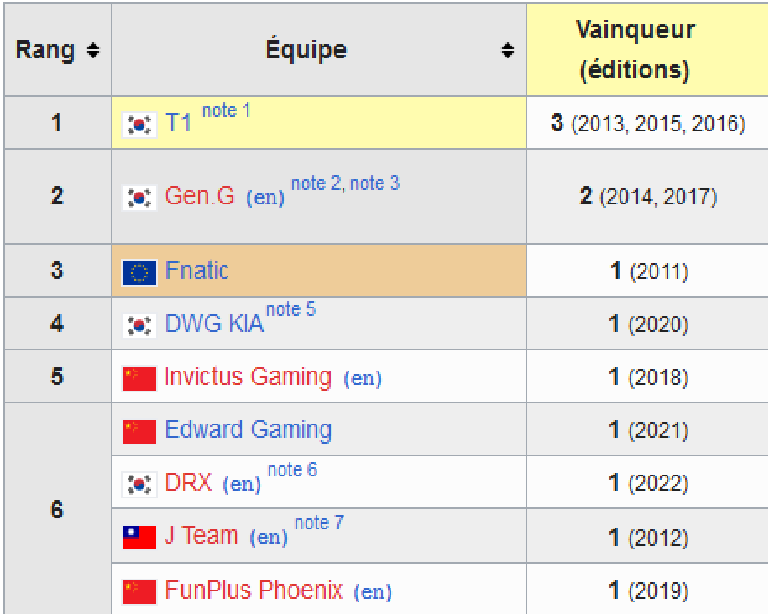

Pour accéder à la ranked il faut être niveau 30,la meilleure méthode pour XP c'est de faire des parties normales/parties contre des BOTS.Une fois niveau 30 ,il faut faire 10 games de placement,à la fin de celles-ci vous aurez un rang parmi ceux là:
Plus les divisions augmentent plus les joueurs sont forts,à partir de GrandMaster les places sont limités,pour GrandMaster il n'y a que 700 joueurs,et 300 pour Challenger,c'est considéré comme l'Elite car LoL comptabilise des centaines de millions de joueurs. Il y'a differentes régions,EU Ouest,EU Est,Amérique du Nord,du Sud,Chine,Corée
Chaque année,un évènement qui réunit des millions de joueurs(en ligne,autant que IRL)est organisé,cet évènement s'appelle LoL Worlds, l'équivalent d'une coupe de monde.Il y'a des millions de dollars à gagner, et une coupe.
Par exemple ,en 2022 l'équipe coréenne DRX a gagné les Worlds,l'équipe avec le plus de trophée est l'équipe de Faker, SKT T1,une équipe coréenne.

On peut voir que les équipes asiatiques dominent les Worlds,dans le top 6,1 seule équipe européenne a gagné les worlds.
On peut donc se demander pourquoi ? et c'est une question complexe qui implique societé,mentalité et culture.C'est donc ce que l'on va voir à la prochaine page.